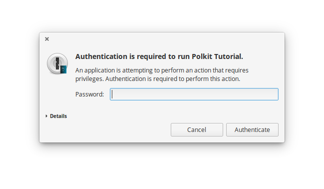

In this tutorial we are going to learn how to make a Polkit application that launches itself as a privileged process with pkexec. Similar, but not exactly as GParted. In a following tutorial we will make an application with a helper in which the application itself will be launched with the privileges of the user launching it, but later asks for authentication to launch another process to perform an action that requires higher privileges. The other tutorial would be the reccommended way to do it instead of always having your process running as root.
GParted for instance, at the moment of writing this tutorial, is launched with pkexec by another process running as the normal user. Then that GParted instance that gets executed by pkexec is always running as root. We will do something similar in this tutorial.
I recommend following this tutorial first: https://elementary.io/docs/code/getting-started , since I will be using the same methodology although in a slightly different order, but it is not a requirement to have done that tutorial first. It will just make it easier to understand what I am doing if you follow that one first.
Create the following directory and file structure in whatever place you put your programming projects. Normally that is a directory named Projects in the Home directory of your desktop account. I am going to assume that such is the case. Make it look like this:
📂 Projects
📂 polkit-tutorial
📂 build
📂 data
📂 16
📂 24
📂 32
📂 48
📂 64
📂 128
📂 256
🗋 polkit-tutorial.desktop
🗋 polkit.tutorial.pkexec.policy
📂 src
📂 vapi
🗋 polkit-tutorial-pkexec.vala
🗋 polkit-tutorial.vala
If you don't want to create all that by hand, execute the following command in a terminal while being in your account's home directory:
mkdir -p Projects/polkit-tutorial Projects/polkit-tutorial/build Projects/polkit-tutorial/data Projects/polkit-tutorial/src Projects/polkit-tutorial/src/vapi Projects/polkit-tutorial/data/256 Projects/polkit-tutorial/data/128 Projects/polkit-tutorial/data/64 Projects/polkit-tutorial/data/48 Projects/polkit-tutorial/data/32 Projects/polkit-tutorial/data/24 Projects/polkit-tutorial/data/16 && touch Projects/polkit-tutorial/AUTHORS Projects/polkit-tutorial/CMakeLists.txt Projects/polkit-tutorial/cmake_uninstall.cmake.in Projects/polkit-tutorial/COPYING Projects/polkit-tutorial/data/polkit-tutorial.desktop Projects/polkit-tutorial/src/polkit-tutorial-pkexec.vala Projects/polkit-tutorial/src/polkit-tutorial.vala
Now download the whole git project as zip from here. Extract it anywhere on your computer and copy the content found in the data directory right into our project's data directory. They are the icons to be used by our application. When you get asked to merge directories, choose Yes/Merge.
We only need elementary-SDK to build our application, but if you want to package it in Launchpad, which will be an optional part of this tutorial, you will also need bzr. There are more dependencies, but if you install elementary-SDK through apt-get, those dependencies will be automatically installed too. The most important are: valac, cmake, make, libgtk-3-dev. The valac version and its vapi must be version 0.34 or higher, so let's add some repositories to satisfy our dependencies before we do anything else. Launch a Terminal and execute these commands to add the adequate repositories without breaking your installation:
sudo add-apt-repository "deb http://ppa.launchpad.net/elementary-os/daily/ubuntu xenial/main"
sudo add-apt-repository "deb http://ppa.launchpad.net/elementary-os/os-patches/ubuntu xenial/main"
sudo apt-get update
elementaryOS users of Loki already have them, they don't have to execute the above commands. But the following command must be executed by anyone to install the dependencies:
sudo apt-get install elementary-sdk
The valac 0.34 is available trough Zesty's (Ubuntu 17.04) universal repository which may cause conflicts if you try to add such repository in an Ubuntu release prior to 17.04. That is why we use these other repositories instead. Since at the moment of writing this tutorial there is no official Ubuntu 17.04 released.
Open the file polkit-tutorial-pkexec.vala and write the following code:
public static int main (string[] args) {
// Create the variables for the process execution
string[] spawnArguments = {"pkexec", "polkit-tutorial"};
string[] spawnEnvironment = Environ.get ();
string spawnStdOut;
string spawnStdError;
int spawnExitStatus;
try {
// Spawn the process synchronizedly
// We do it synchronizedly because since we are just launching another process and such is the whole
// purpose of this program, we don't want to exit this, the caller, since that will cause our spawned process to become a zombie.
Process.spawn_sync ("/", spawnArguments, spawnEnvironment, SpawnFlags.SEARCH_PATH, null, out spawnStdOut, out spawnStdError, out spawnExitStatus);
// Print the output if any
stdout.printf ("Output: %s\n", spawnStdOut);
// Print the error if any
stderr.printf ("There was an error in the spawned process: %s\n", spawnStdError);
// Print the exit status
stderr.printf ("Exit status was: %d\n", spawnExitStatus);
} catch (SpawnError spawnCaughtError) {
stderr.printf ("There was an error spawining the process. Details: %s", spawnCaughtError.message);
}
return 0;
}
From lines 3-7 we set-up the variables to later launch our application with root privileges using pkexec. In line 13 we actually launch our application using pkexec. In lines 16-20 we print the standard output, the standard error as well as the exit status of the spawned process.
using Gtk;
public class PolkitTutorialApplication : Gtk.Application {
public PolkitTutorialApplication () {
Object (application_id: "polkit.tutorial",
flags: ApplicationFlags.FLAGS_NONE);
}
protected override void activate () {
// The main window with its title and size
var window = new Gtk.ApplicationWindow (this);
window.title = "Polkit tutorial";
// The buttons container
Box buttonsBox = new Box (Gtk.Orientation.VERTICAL, 0);
// The home directory
string temporaryFilesDirectory = Environment.get_tmp_dir ();
// Create the button with the functionality to create a file
Button writeFile = new Button.with_label ("Create test file in " + temporaryFilesDirectory);
// On button click
writeFile.clicked.connect (() => {
try {
// The file
var polkitTutorialFile = File.new_for_path (temporaryFilesDirectory + "/polkit-tutorial-sample-file.txt");
// Write the file to Documents
polkitTutorialFile.create (FileCreateFlags.PRIVATE);
} catch (Error caughtError) {
stderr.printf ("GLib error. Details: %s", caughtError.message);
}
});
Button deleteFile = new Button.with_label ("Delete created file from " + temporaryFilesDirectory);
// On button click
deleteFile.clicked.connect (() => {
try {
// Get the file in a variable
var polkitTutorialFile = File.new_for_path (temporaryFilesDirectory + "/polkit-tutorial-sample-file.txt");
// Delete the file
polkitTutorialFile.delete ();
} catch (Error caughtError) {
stderr.printf ("GLib error. Details: %s", caughtError.message);
}
});
buttonsBox.pack_start (writeFile, false, false, 10);
buttonsBox.pack_start (deleteFile, false, false, 10);
buttonsBox.margin = 10;
window.add (buttonsBox);
window.show_all ();
}
public static int main (string[] args) {
var app = new PolkitTutorialApplication ();
return app.run (args);
}
}
Our lines of interest are line 27 and line 39. When the program runs as root when launched with pkexec by our previous program and you click the button to create the file, said file will be created with the owner being root. Try opening a file explorer and look at the properties of the file. You will notice it is owned by root and you cannot delete it. To delete it, you must click the button in the application that is running as root.
Let's now create the .policy file since without it, our application will not run adequately even if we compile it and install it.
Open the polkit.tutorial.pkexec.policy file and paste the following:
Before we proceed any further, let's create the AUTHORS and COPYING file. Then we set the CMake to compile these programs and install them.
We use the same method found here. The
AUTHORS file contains your name and email address along with the name and email address of whoever helped you in creating the application. It can be something like:
Your Name <you@emaildomain.com>
Your Friend <friend@emaildomain.com>
Open the polkit-tutorial.desktop file and add the following:
[Desktop Entry]
Name=Polkit Tutorial
GenericName=Polkit Tutorial App
Comment=An application that uses pkexec to run as root
Categories=Utility;
Exec=polkit-tutorial-pkexec
Icon=polkit-tutorial
Terminal=false
Type=Application
X-GNOME-Gettext-Domain=polkit-tutorial
Keywords=polkit;
For the CMake file we use the same one here, but with some differences to fit our case. Open the CMakeLists.txt file and add the following:
# project name
project (PolkitTutorial)
# uninstall target
configure_file(
"${CMAKE_CURRENT_SOURCE_DIR}/cmake_uninstall.cmake.in"
"${CMAKE_CURRENT_BINARY_DIR}/cmake_uninstall.cmake"
IMMEDIATE @ONLY)
add_custom_target(uninstall
COMMAND ${CMAKE_COMMAND} -P ${CMAKE_CURRENT_BINARY_DIR}/cmake_uninstall.cmake)
# the oldest stable cmake version to require
cmake_minimum_required (VERSION 2.6)
# tell cmake where its modules can be found in our project directory (vala modules)
#list (APPEND CMAKE_MODULE_PATH ${CMAKE_SOURCE_DIR}/cmake)
#list (APPEND CMAKE_MODULE_PATH ${CMAKE_SOURCE_DIR}/cmake/src)
# where we install data directory (if we have any)
set (DATADIR "${CMAKE_INSTALL_PREFIX}/share")
# what to call that directory where we install data too
set (PKGDATADIR "${DATADIR}/PolkitTutorial")
#set the name of our two executables
set (EXEC_NAME "polkit-tutorial-pkexec")
set (EXEC_NAME2 "polkit-tutorial")
set (RELEASE_NAME "A simple polkit tutorial.")
set (VERSION "0.1")
set (VERSION_INFO "First release")
# we're about to use pkgconfig to make sure dependencies are installed so let's find pkgconfig first
find_package(PkgConfig)
# now let's actually check for the required dependencies
pkg_check_modules(DEPS REQUIRED gtk+-3.0 gio-2.0)
add_definitions(${DEPS_CFLAGS})
link_libraries(${DEPS_LIBRARIES})
link_directories(${DEPS_LIBRARY_DIRS})
# make sure we have vala
find_package(Vala REQUIRED)
# make sure we use vala
include(ValaVersion)
# make sure it's the desired version of vala
ensure_vala_version("0.16" MINIMUM)
# files we want to compile
include(ValaPrecompile)
vala_precompile(VALA_C ${EXEC_NAME}
src/polkit-tutorial-pkexec.vala
# tell what libraries to use when compiling
PACKAGES
gtk+-3.0
gio-2.0
)
# tell cmake what to call the executable we just made
add_executable(${EXEC_NAME} ${VALA_C})
target_compile_options (${EXEC_NAME} PUBLIC -fPIE)
vala_precompile(VALA_C ${EXEC_NAME2}
src/polkit-tutorial.vala
# tell what libraries to use when compiling
PACKAGES
gtk+-3.0
gio-2.0
)
# tell cmake what to call the executable we just made
add_executable(${EXEC_NAME2} ${VALA_C})
# install the binaries we just made
install (TARGETS ${EXEC_NAME} RUNTIME DESTINATION bin)
install (TARGETS ${EXEC_NAME2} RUNTIME DESTINATION bin)
# install the polkit action file
install (FILES ${CMAKE_CURRENT_SOURCE_DIR}/data/polkit.tutorial.pkexec.policy DESTINATION /usr/share/polkit-1/actions/)
# install our .desktop file so the Applications menu will see it
install (FILES ${CMAKE_CURRENT_SOURCE_DIR}/data/polkit-tutorial.desktop DESTINATION ${DATADIR}/applications/)
# install the application icons
install (FILES ${CMAKE_CURRENT_SOURCE_DIR}/data/16/polkit-tutorial.png DESTINATION ${DATADIR}/icons/gnome/16x16/apps/)
install (FILES ${CMAKE_CURRENT_SOURCE_DIR}/data/24/polkit-tutorial.png DESTINATION ${DATADIR}/icons/gnome/24x24/apps/)
install (FILES ${CMAKE_CURRENT_SOURCE_DIR}/data/32/polkit-tutorial.png DESTINATION ${DATADIR}/icons/gnome/32x32/apps/)
install (FILES ${CMAKE_CURRENT_SOURCE_DIR}/data/48/polkit-tutorial.png DESTINATION ${DATADIR}/icons/gnome/48x48/apps/)
install (FILES ${CMAKE_CURRENT_SOURCE_DIR}/data/128/polkit-tutorial.png DESTINATION ${DATADIR}/icons/gnome/128x128/apps/)
install (FILES ${CMAKE_CURRENT_SOURCE_DIR}/data/256/polkit-tutorial.png DESTINATION ${DATADIR}/icons/gnome/256x256/apps/)
install (FILES ${CMAKE_CURRENT_SOURCE_DIR}/data/256/polkit-tutorial.svg DESTINATION ${DATADIR}/pixmaps/)
install (FILES ${CMAKE_CURRENT_SOURCE_DIR}/data/16/polkit-tutorial.svg DESTINATION ${DATADIR}/icons/elementary/apps/16/)
install (FILES ${CMAKE_CURRENT_SOURCE_DIR}/data/24/polkit-tutorial.svg DESTINATION ${DATADIR}/icons/elementary/apps/24/)
install (FILES ${CMAKE_CURRENT_SOURCE_DIR}/data/32/polkit-tutorial.svg DESTINATION ${DATADIR}/icons/elementary/apps/32/)
install (FILES ${CMAKE_CURRENT_SOURCE_DIR}/data/48/polkit-tutorial.svg DESTINATION ${DATADIR}/icons/elementary/apps/48/)
install (FILES ${CMAKE_CURRENT_SOURCE_DIR}/data/128/polkit-tutorial.svg DESTINATION ${DATADIR}/icons/elementary/apps/128/)
install (FILES ${CMAKE_CURRENT_SOURCE_DIR}/data/256/polkit-tutorial.svg DESTINATION ${DATADIR}/icons/elementary/apps/256/)
The following is very important so that you can run sudo make uninstall and uninstall the program. Open the cmake_uninstall.cmake.in and paste the following logic:
if(NOT EXISTS "@CMAKE_CURRENT_BINARY_DIR@/install_manifest.txt")
message(FATAL_ERROR "Cannot find install manifest: @CMAKE_CURRENT_BINARY_DIR@/install_manifest.txt")
endif(NOT EXISTS "@CMAKE_CURRENT_BINARY_DIR@/install_manifest.txt")
file(READ "@CMAKE_CURRENT_BINARY_DIR@/install_manifest.txt" files)
string(REGEX REPLACE "\n" ";" files "${files}")
foreach(file ${files})
message(STATUS "Uninstalling $ENV{DESTDIR}${file}")
if(IS_SYMLINK "$ENV{DESTDIR}${file}" OR EXISTS "$ENV{DESTDIR}${file}")
exec_program(
"@CMAKE_COMMAND@" ARGS "-E remove \"$ENV{DESTDIR}${file}\""
OUTPUT_VARIABLE rm_out
RETURN_VALUE rm_retval
)
if(NOT "${rm_retval}" STREQUAL 0)
message(FATAL_ERROR "Problem when removing $ENV{DESTDIR}${file}")
endif(NOT "${rm_retval}" STREQUAL 0)
else(IS_SYMLINK "$ENV{DESTDIR}${file}" OR EXISTS "$ENV{DESTDIR}${file}")
message(STATUS "File $ENV{DESTDIR}${file} does not exist.")
endif(IS_SYMLINK "$ENV{DESTDIR}${file}" OR EXISTS "$ENV{DESTDIR}${file}")
endforeach(file)
That will allow us to uninstall the program and all the installed files without having to manually remove file by file.
We are finally able to compile and install our program to test it. Launch a terminal, move to the build directory and execute the following commands to create the make files, compile, and install.
cmake -DCMAKE_INSTALL_PREFIX=/usr ../
make
sudo make install
Now test the application. Run it and you should get a message like this:
When you authenticate correctly you should be left with something similar to this:
Click the create file button and then look for the file created in said place. Unless you have modified the code in the tutorial, the name of the file should be polkit-tutorial-sample-file.txt. Look in the file properties at who is the owner. It should be root because the application is running as root and therefore, the owner of the file is root. You will not be able to delete it manually if you try to delete it as your user. Only root can delete it. Effectively showing that the application is running as root when it created the file. Now, click the delete button in the same application and the file will be deleted.
To uninstall, execute the following command while being in the build directory where the make files where created in the previous section:
sudo make uninstall
This part is optional. We are going to use the same method used here. Create a new directory inside your project directory named polkit-tutorial-packaging. Copy inside it all of the content and project structure we have created until now. Now install the following programs with these commands if you don't have them already:
sudo apt-get install bzr
sudo apt-get install bzr-builder
sudo apt-get install pbuilder
sudo apt install openssh-client
You must modify the CMakeLists.txt file of polkit-tutorial-packaging and make it look like bellow:
# project name
project (PolkitTutorial)
# the oldest stable cmake version to require
cmake_minimum_required (VERSION 2.6)
# tell cmake where its modules can be found in our project directory (vala modules)
list (APPEND CMAKE_MODULE_PATH ${CMAKE_SOURCE_DIR}/cmake)
list (APPEND CMAKE_MODULE_PATH ${CMAKE_SOURCE_DIR}/cmake/src)
# where we install data directory (if we have any)
set (DATADIR "${CMAKE_INSTALL_PREFIX}/share")
# what to call that directory where we install data too
set (PKGDATADIR "${DATADIR}/PolkitTutorial")
#set the name of our two executables
set (EXEC_NAME "polkit-tutorial-pkexec")
set (EXEC_NAME2 "polkit-tutorial")
set (RELEASE_NAME "A simple polkit tutorial.")
set (VERSION "0.1")
set (VERSION_INFO "First release")
# we're about to use pkgconfig to make sure dependencies are installed so let's find pkgconfig first
find_package(PkgConfig)
# now let's actually check for the required dependencies
pkg_check_modules(DEPS REQUIRED gtk+-3.0 gio-2.0)
add_definitions(${DEPS_CFLAGS})
link_libraries(${DEPS_LIBRARIES})
link_directories(${DEPS_LIBRARY_DIRS})
# make sure we have vala
find_package(Vala REQUIRED)
# make sure we use vala
include(ValaVersion)
# make sure it's the desired version of vala
ensure_vala_version("0.16" MINIMUM)
# files we want to compile
include(ValaPrecompile)
vala_precompile(VALA_C ${EXEC_NAME}
src/polkit-tutorial-pkexec.vala
# tell what libraries to use when compiling
PACKAGES
gtk+-3.0
gio-2.0
)
# tell cmake what to call the executable we just made
add_executable(${EXEC_NAME} ${VALA_C})
target_compile_options (${EXEC_NAME} PUBLIC -fPIE)
vala_precompile(VALA_C ${EXEC_NAME2}
src/polkit-tutorial.vala
# tell what libraries to use when compiling
PACKAGES
gtk+-3.0
gio-2.0
)
# tell cmake what to call the executable we just made
add_executable(${EXEC_NAME2} ${VALA_C})
# install the binaries we just made
install (TARGETS ${EXEC_NAME} RUNTIME DESTINATION bin)
install (TARGETS ${EXEC_NAME2} RUNTIME DESTINATION bin)
# install the polkit action file
install (FILES ${CMAKE_CURRENT_SOURCE_DIR}/data/polkit.tutorial.pkexec.policy DESTINATION /usr/share/polkit-1/actions/)
# install our .desktop file so the Applications menu will see it
install (FILES ${CMAKE_CURRENT_SOURCE_DIR}/data/polkit-tutorial.desktop DESTINATION ${DATADIR}/applications/)
# install the application icons
install (FILES ${CMAKE_CURRENT_SOURCE_DIR}/data/16/polkit-tutorial.png DESTINATION ${DATADIR}/icons/gnome/16x16/apps/)
install (FILES ${CMAKE_CURRENT_SOURCE_DIR}/data/24/polkit-tutorial.png DESTINATION ${DATADIR}/icons/gnome/24x24/apps/)
install (FILES ${CMAKE_CURRENT_SOURCE_DIR}/data/32/polkit-tutorial.png DESTINATION ${DATADIR}/icons/gnome/32x32/apps/)
install (FILES ${CMAKE_CURRENT_SOURCE_DIR}/data/48/polkit-tutorial.png DESTINATION ${DATADIR}/icons/gnome/48x48/apps/)
install (FILES ${CMAKE_CURRENT_SOURCE_DIR}/data/128/polkit-tutorial.png DESTINATION ${DATADIR}/icons/gnome/128x128/apps/)
install (FILES ${CMAKE_CURRENT_SOURCE_DIR}/data/256/polkit-tutorial.png DESTINATION ${DATADIR}/icons/gnome/256x256/apps/)
install (FILES ${CMAKE_CURRENT_SOURCE_DIR}/data/256/polkit-tutorial.svg DESTINATION ${DATADIR}/pixmaps/)
install (FILES ${CMAKE_CURRENT_SOURCE_DIR}/data/16/polkit-tutorial.svg DESTINATION ${DATADIR}/icons/elementary/apps/16/)
install (FILES ${CMAKE_CURRENT_SOURCE_DIR}/data/24/polkit-tutorial.svg DESTINATION ${DATADIR}/icons/elementary/apps/24/)
install (FILES ${CMAKE_CURRENT_SOURCE_DIR}/data/32/polkit-tutorial.svg DESTINATION ${DATADIR}/icons/elementary/apps/32/)
install (FILES ${CMAKE_CURRENT_SOURCE_DIR}/data/48/polkit-tutorial.svg DESTINATION ${DATADIR}/icons/elementary/apps/48/)
install (FILES ${CMAKE_CURRENT_SOURCE_DIR}/data/128/polkit-tutorial.svg DESTINATION ${DATADIR}/icons/elementary/apps/128/)
install (FILES ${CMAKE_CURRENT_SOURCE_DIR}/data/256/polkit-tutorial.svg DESTINATION ${DATADIR}/icons/elementary/apps/256/)
What we did was remove the uninstall rules, since they won't be needed for Debian packaging and uncommented these lines: list (APPEND CMAKE_MODULE_PATH ${CMAKE_SOURCE_DIR}/cmake) and list (APPEND CMAKE_MODULE_PATH ${CMAKE_SOURCE_DIR}/cmake). Since we did that, now we need to get the cmake modules that the cmake of Launchpad will use because unlike us, the cmake that Launchpad will use, won't have those modules. Launch a terminal and get a copy of the cmake modules that the elementary team mantains:
bzr branch lp:~elementary-os/+junk/cmake-modules
Now copy the contents of the directory you just got (cmake-modules) into a directory named cmake in the packaging directory. Just the contents. Such that it looks like this:
📂 polkit-tutorial-packaging
📂 build
📂 cmake
📂 src
↪...
📂 data
↪...
📂 src
↪...
If you have not yet setup a Launchpad account follow these steps. Otherwise you can skip them. Launch a terminal in your home directory and execute:
ssh-keygen -C rsa-key-bzr -t rsa
Accept the default file name for your key. Enter a password when prompted and then enter it again. Everytime you want to push your project to Launchpad, you will need to use this password. Don't forget it. Now open the file ~/.ssh/id_rsa.pub with your favorite editor. In elementaryOS you can do it with the following command:
scratch-text-editor ~/.ssh/id_rsa.pub
Login to your Launchpad account in a web browser, paste in your SSH keys page the text in the file you just opened. Then click Import public key. Now you can login to Launchpad in your terminal with the following command:
bzr launchpad-login your-launchpad-id
Replace your-launchpad-id with your Launchpad ID that you can find when you login to your Launchpad page in a web browser.
Now edit the file ~/.pbuilderrc. This is the full path of the file. It is in your home directory and it is hidden. You need to enable the view of hidden files to view it in a file explorer. In elementaryOS you can edit it with the following command:
scratch-text-editor ~/.pbuilderrc
Add the following to said file:
COMPONENTS="main universe multiverse restricted"
DISTRIBUTION=zesty
Get a copy of the debian template files that the elementary team mantains with this command, ran from the Projects directory:
bzr branch lp:~elementary-apps/+junk/debian-template
Now copy the debian directory that was created in the branch you just grabbed (located in the Projects directory) into the polkit-tutorial-packaging directory. Open the file named changelog and paste the following:
hello-packaging (0.1) precise; urgency=low
* Initial Release.
-- Your Name Sat, 21 Jan 2017 05:30:22 -0500
Open the file named control and paste the following:
Source: polkit-tutorial-packaging
Section: x11
Priority: extra
Maintainer: Your Name
Build-Depends: cmake (>= 2.8),
debhelper (>= 8.0.0),
valac-0.34 | valac (>= 0.34)
Standards-Version: 3.9.7
Package: polkit-tutorial-packaging
Architecture: any
Depends: ${misc:Depends}, ${shlibs:Depends}
Description: Polkit Tutorial
This is a tutorial for using pkexec with GTK+ and Vala
Open the file called copyright and paste the following:
Format: http://dep.debian.net/deps/dep5
Upstream-Name: polkit-tutorial-packaging
Source: https://code.launchpad.net/~your-launchpad-id/+junk/polkit-tutorial-packaging
Files: build/* cmake/* src/* data/* debian/*
Copyright: 2017 Your Name
License: GPL-3.0+
Create a file in the polkit-tutorial-packaging directory named polkit-tutorial-packaging.recipe and put the following in it:
# bzr-builder format 0.3 deb-version {debupstream}+r{revno}-1
lp:~your-launchpad-id/+junk/polkit-tutorial-packaging
Initialize a bazaar repository by opening a terminal, moving to the polkit-tutorial-packaging directory and executing these commands:
bzr init
bzr add build/* cmake/* data/* src/* debian/* CMakeLists.txt COPYING AUTHORS
bzr commit -m "Initial commit"
bzr push lp:~your-launchpad-id/+junk/polkit-tutorial-packaging
Now execute these commands to package it locally before proceeding to ask Launchpad to package it:
bzr dailydeb --allow-fallback-to-native polkit-tutorial-packaging.recipe working-dir
sudo pbuilder create
sudo pbuilder build working-dir/[project_version].dsc
Replace project_version with the name of the .dsc created in working-dir. If everything went well a package should have been created in /var/cache/pbuilder/result/. Then you can proceed to tell Launchpad to package it.
Once you have successfully created a package locally, you can go to your Launchpad page, enter your recently uploaded branch for packaging: https://code.launchpad.net/people/+me/+junk/polkit-tutorial-packaging/+new-recipe and click Create packaging recipe. Customize as you see fit, and when you get to the Default distribution series make sure you check Zesty. Remember that we used valac version 0.34, and to prevent problems it is better to select this one. Don't worry, your package will be installable in Xenial as long as the only thing that you are using from Zesty is the valac 0.34 toghether with it's vapi and not other libraries. Since this specific application in this tutorial doesn't make use of specific vala vapi 0.34 functions, you can choose Xenial or Trusty. But remember, if in the future you make use of the whole developing environment in this tutorial, you may end up using a function available only in vala vapi 0.34 which will render your program unbuildable under anyhting older than Zesty.
Now, if you want to make your package available for Xenial, you need to go to your PPA packages, which can be found here: https://code.launchpad.net/people/+me/+archive/ubuntu/ppa/+packages and click the option that says Copy packages. Then you select the Destination series to be Xenial and the Copy options to Copy existing binaries. You wait for it to complete and then Xenial users will be able to install your application.